One current image or page where buyers first judge the business.
Aster Forge / visual launch systems
Sharper launch visuals for small businesses that need buyer trust fast.
Aster Forge turns weak product photos, profile visuals, launch graphics, and rough shop pages into buyer-facing visual directions. Start with a watermarked proof, then move into a fixed-scope launch kit when the direction is worth using.
Watermarked proof first
Small-business focused
Private assets protected
- 3-8
- visual directions per sprint
- 24-72h
- typical starter turnaround
- 1
- weak image or link is enough to start
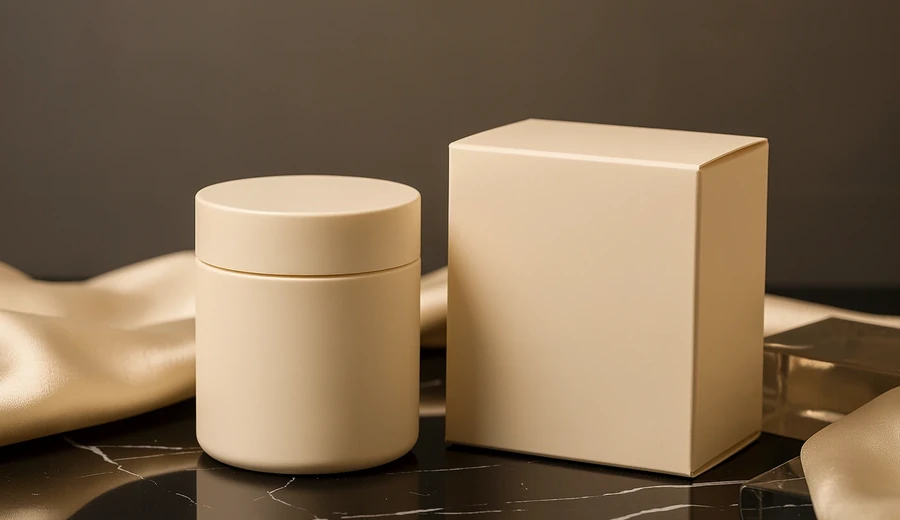
Self-serve audit lab
Start with one weak image, not a long brief.
The lowest-friction entry is a visual audit: paste one product photo, listing, profile image, or shop page, then receive a buyer-facing diagnosis and a proof direction before any full package starts.
Score visual trust, identify buyer-surface weakness, and recommend the fixed package.
A watermarked proof brief goes through review before any paid generation or contact.
Buyer fit
Built for owners who already have something to sell, but their visuals are leaking trust.
The fastest first customers are not abstract brands. They are cafes, bakeries, jewelry shops, beauty services, product sellers, local professionals, and small creators with visible weak images on pages buyers already check.
Active shops with fixable visuals
Good product or service, weak photo quality, inconsistent gallery, dated profile cover, or launch image that does not match the price.
One weak point, not a full brief
A product photo, website section, Yelp or Google image, Etsy or Shopify listing, social post, menu image, or profile banner.
A watermarked commercial proof
A sharper direction, quick diagnosis, and the fixed package that fits the actual buyer surface.
No endless bespoke retainer
No open-ended revisions, no public leak of private assets, no generic AI art dump, and no pretending one style fits every cuisine or shop.
Website hero
Google / Yelp
Etsy / Shopify
Menu post
Profile banner
Launch page
Private sales message
Operating discipline
Every visual has to answer one commercial question before it earns space on the site.
Where will buyers see it?
Website hero, listing cover, Google/Yelp profile, social launch plate, menu post, or direct sales proof.
What must stay recognizable?
The real product, shop type, cuisine, service identity, and customer context are anchors, not disposable props.
What is the next paid step?
A preview should naturally point to a fixed sprint, launch kit, or monthly refresh instead of vague interest.
Visual diagnosis lab
A proof surface that shows delivery capability, not a portfolio dump.
The public site should show disciplined taste and technical control without exposing the private factory. This lab view presents how Aster Forge thinks: source weakness, buyer signal, offer fit, and usable commercial output.
Source
Weak first impression
Low trust light, unclear crop, generic surface, or visual clutter.
Diagnosis
Buyer signal map
What needs to become sharper before the owner asks for attention.
Output
Usable sales surface
Hero image, profile banner, launch plate, or premium proof direction.
AF-01
Signal Read
What is making the image feel cheap?
Clutter, weak crop, low trust lighting, generic surface, broken product geometry, or no clear buyer use.
What should this become?
Listing cover, website hero, social launch plate, profile banner, or premium proof piece.
What must not change?
Product identity, original scene logic, customer privacy, and any asset that could become a paid deliverable.
What changes
The first image should remove doubt before the buyer reads the caption.
The site is built around a simple commercial promise: diagnose the weak signal, create a stronger visual direction, and package the result for the places buyers already check.
Premium hero image
Cleaner lighting, stronger surface choice, clearer product priority, and a buyer-ready crop.
Trust-building cover
Visual direction for Google, Yelp, WeChat, website hero, or service profile surfaces.
Small gallery system
A practical set of crops and scene directions so the offer feels like a real campaign.
Selected work
Grouped by market use and visual language.
The gallery uses public-safe service samples and cropped capability crops. Full product collections, private gifts, and client-specific material are shared only through curated previews.
Commercial refresh
Small Business Launch Visuals
Clean product, food, beauty, jewelry, and authority visuals for shops that need a stronger first impression.
FD
Food / cafe
Local Social Launch
Menu, social post, and launch plate direction for cafes, bakeries, and private kitchens.
PD
Product hero
Trust Rescue
Minimal ecommerce hero visuals for candles, skincare, tea, and giftable products.
JW
Jewelry
Giftable Detail
Macro product scenes with a stronger premium and gifting signal.
BT
Beauty / service
Booking Trust Plate
Clean visual anchors for salons, spas, lash, nail, facial, and wellness services.
SV
Professional service
Authority Room
Website hero and profile-banner tone for service owners who sell trust.
EX
Premium profile
Executive Signal Room
Authority visuals for consultants, brokers, local professionals, and high-trust service pages.
Fresh sample range
Fast Proof Directions
Public-safe sample plates for the lanes most small businesses ask about first: food, packaged goods, jewelry, beauty, local service, culture, and launch visuals.
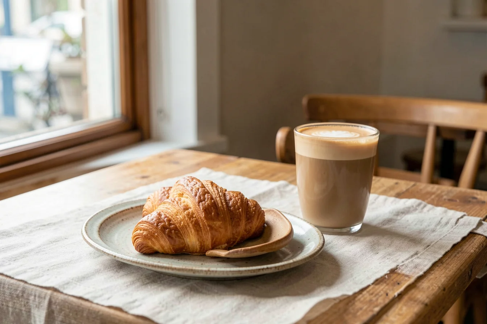
Food / cafe
Bakery Morning Launch
Menu post, website hero, and local launch image direction.
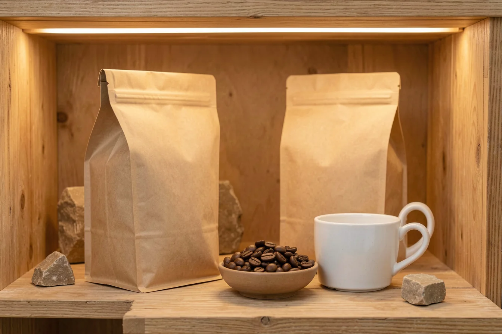
Coffee / packaged goods
Roaster Shelf Trust
Product gallery, Shopify hero, and proof plate direction.
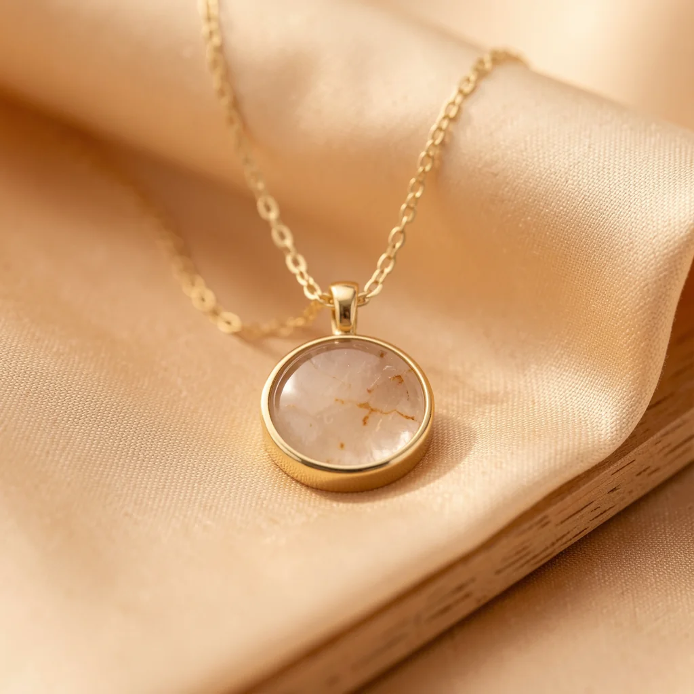
Jewelry / accessories
Gift Detail Signal
Listing hero, gift campaign, and premium detail crop direction.
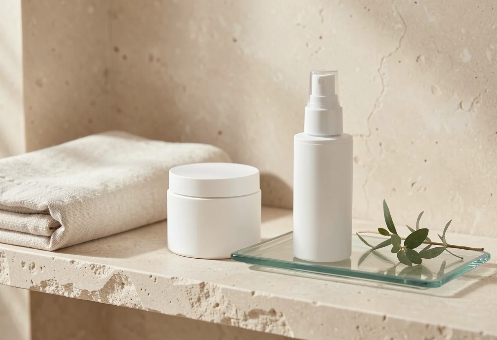
Beauty / wellness
Wellness Routine Shelf
Service profile, product routine, and trust-building visual direction.
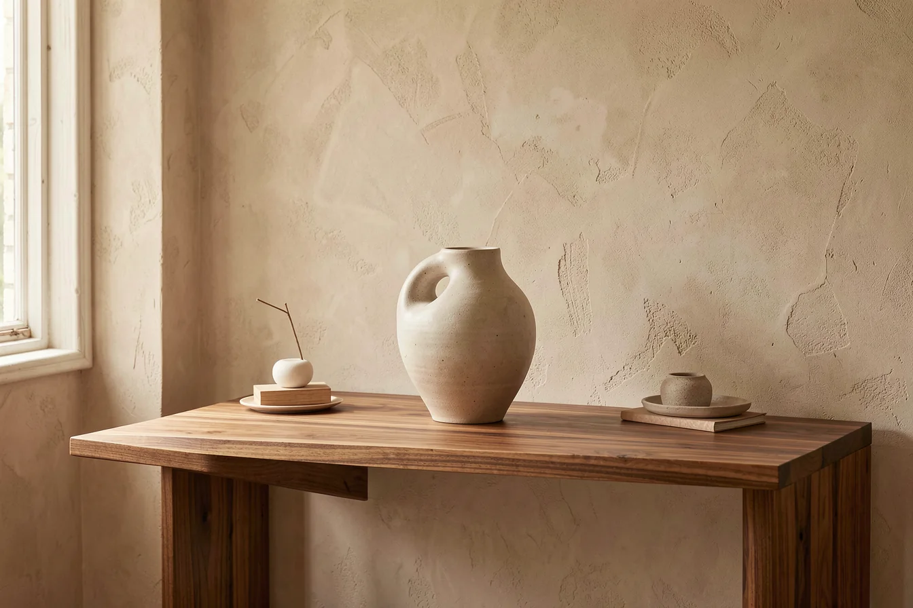
Home decor / gifts
Console Object Aura
Collection hero, shop banner, and product story image direction.
Professional service
Authority Room Refresh
Website hero, profile banner, and offer-card visual language.
Eastern hospitality
Eastern Hospitality Mood
Premium restaurant, tea room, and cultural brand atmosphere.
Japanese-inspired hospitality
Quiet Rain Interior
Boutique hotel, spa, restaurant, and calm service atmosphere.
Classical / premium identity
Classical Trust Hall
High-status culture anchor and advisory brand mood direction.
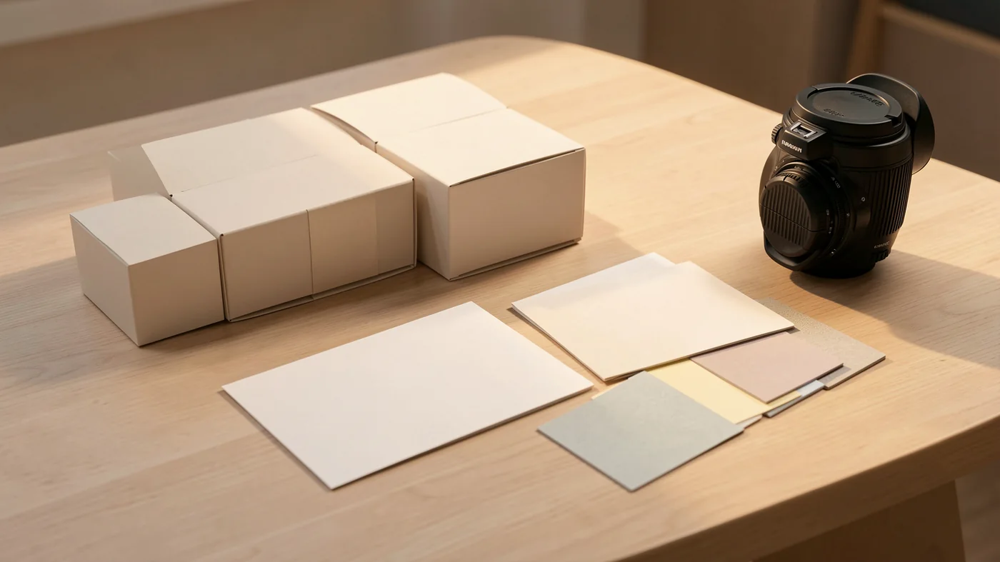
Launch kit / strategy
Launch Table System
B2B offer proof and campaign planning visual direction.
Capability range
Cultural Art Range
Public-safe visual samples grouped by tradition. They show range and taste without publishing full poster, acrylic, POD, Etsy, or private gift designs.
Eastern range
Chinese And Japanese Visual Language
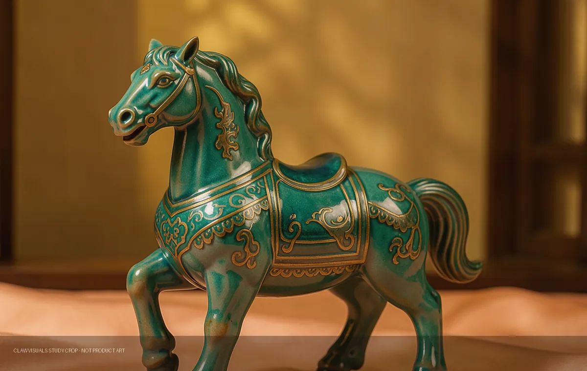
China / artifact
Dynasty Object
Japan / interior
Rain Room
China / xianxia
Celestial Gate
China / interior
Cloud Pavilion
China / ritual object
Incense Vessel
China / scholar table
Bamboo Desk
China / mythic guardian
Jade Guardian
China / ancient war
Border Fortress
Japan / shrine path
Snow Lantern
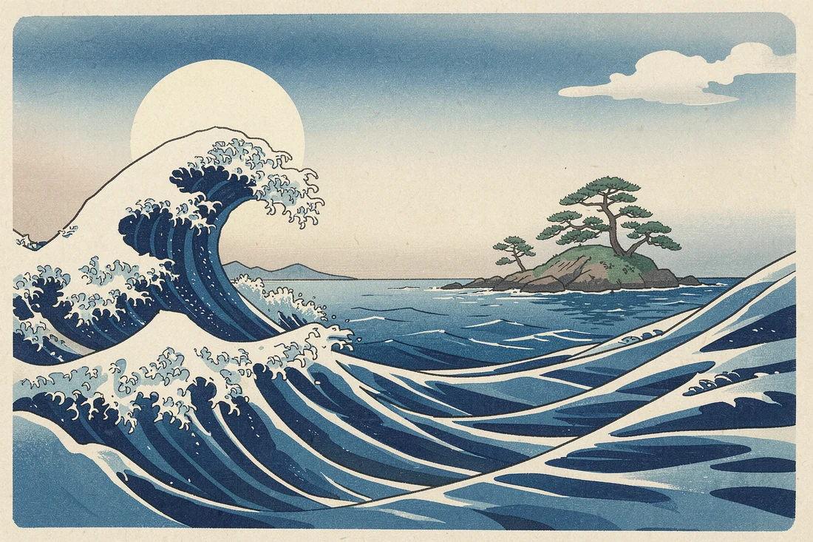
Japan / print language
Wave Print
European range
Classical, Greek, Sacred, And Western Visual Language
European classical
Guardian Threshold
Greek / mythic coast
Lighthouse Coast
Old-world authority
Atelier Desk
Sacred / quiet authority
Candle Desk
Christian / architecture
Chapel Light
Monastic / interior
Storm Desk
Classical / music salon
Salon Authority
Epic / threshold
Golden Gate
Epic / city scale
Fortress Bridge
Greek / night symbol
Owl Theater
Gothic / shadow
Shadow Stair
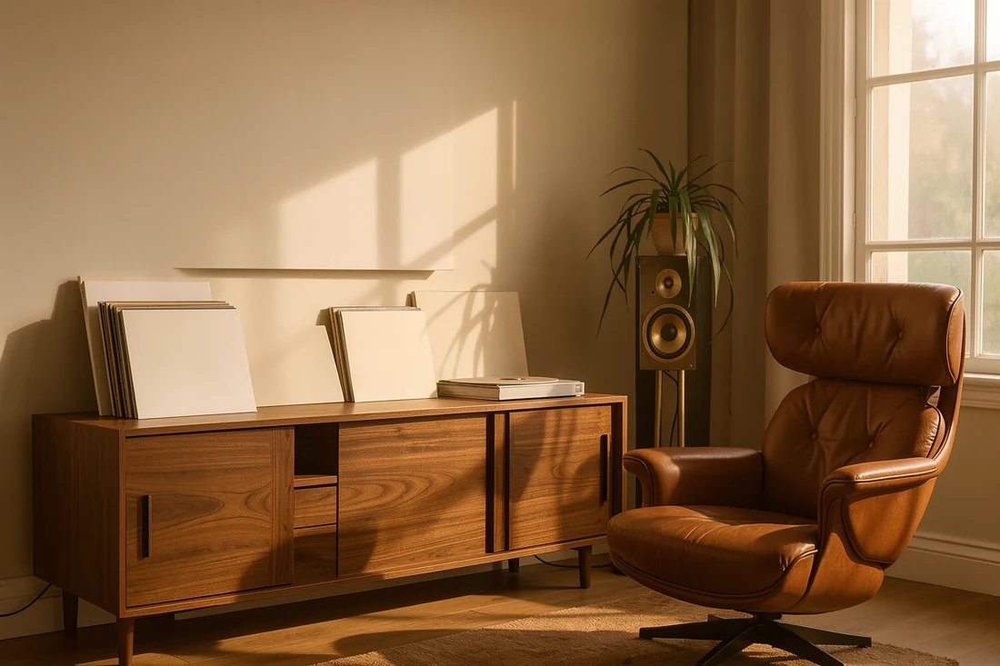
Western / music mood
Modern Music
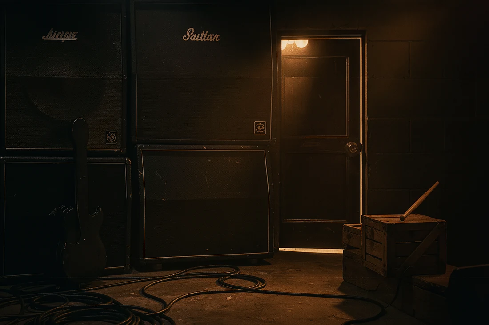
Western / music signal
Backline Room
What Aster Forge sells
Fixed-scope visual packages, not endless custom labor.
AF
Launch visual
Hero
Listing
Profile
Launch
Product Refresh Counsel
One weak image or page becomes a clear buyer-surface diagnosis.
Launch Kit
Hero, profile, social, and listing surfaces built as one small system.
Culture Premium Pack
High-taste gift, culture, and brand-aura proofs for higher-status clients.
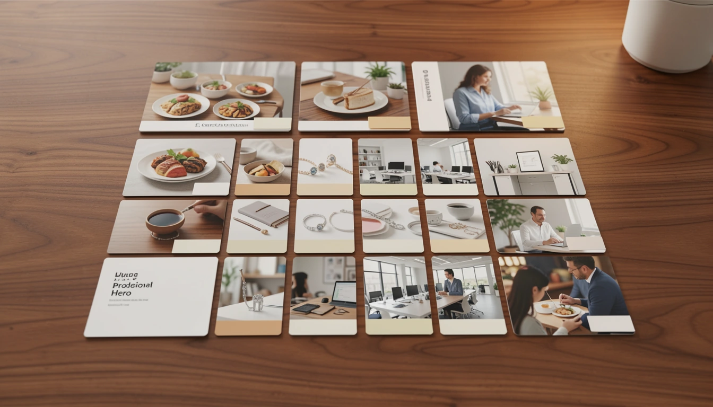
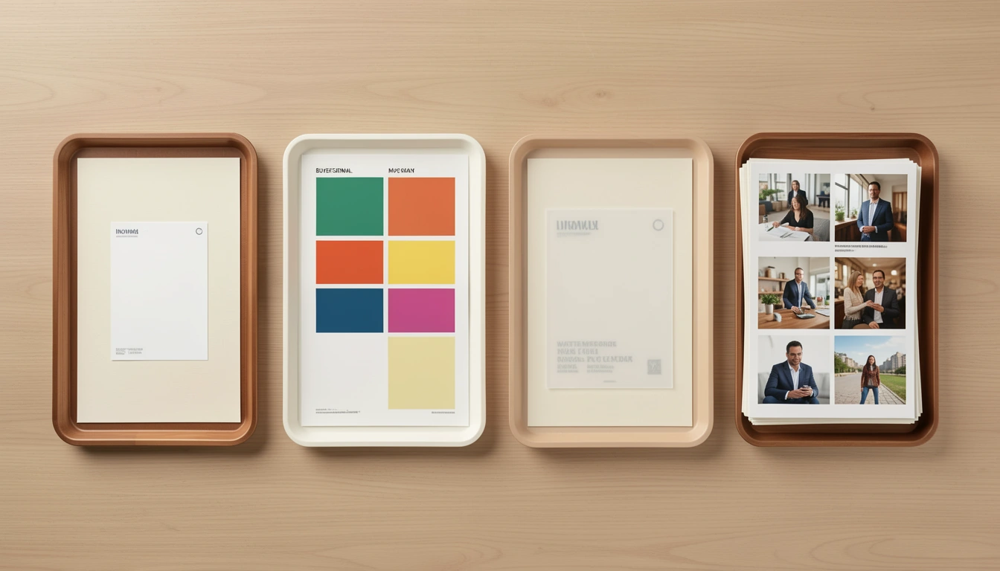
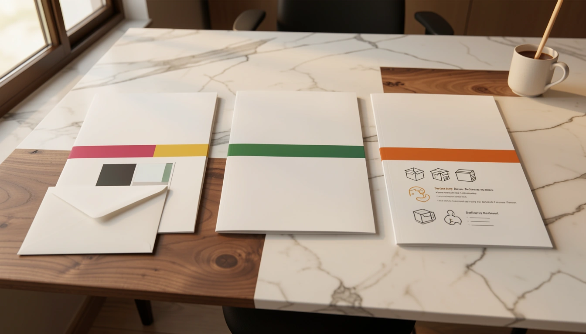
Category playbooks
Start with repeatable merchant lanes, then personalize the proof.
These are the easiest lanes to sell first because the visual weakness is common, the deliverables are obvious, and the samples can be judged quickly.
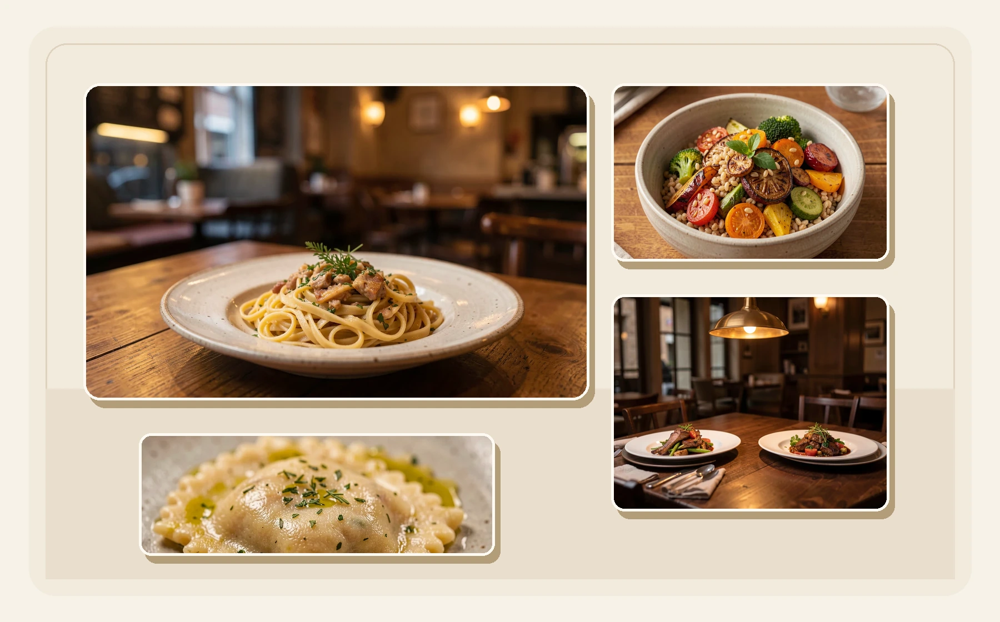
PB-FOOD-01
Local food launch pack
One merchant lane, four buyer-facing surfaces: hero, social, cover, and detail.
Use this lane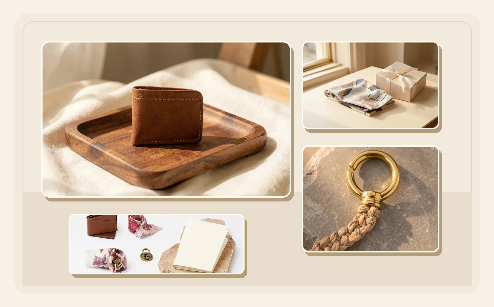
PB-ACC-01
Accessories gift pack
One boutique language across distinct products: wallet, scarf, key holder, and gift notebook.
Use this lane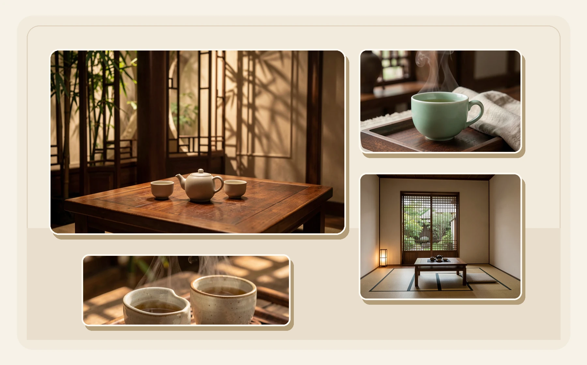
PB-PREMIUM-01
Tea hospitality proof
Premium culture direction translated into practical site, profile, and social surfaces.
Use this lane
FD
PB-FOOD-01
Cuisine-specific food lanes
Menu-to-social launch pack
Hero plate, square post, story crop, and storefront/profile cover direction, split by cuisine when needed.
Build food brief
JW
PB-JEWEL-01
Jewelry / accessories
Gift trust gallery
Macro hero, gift-context scene, detail crop, and premium listing cover.
Build gift brief
BT
PB-BEAUTY-01
Beauty / spa / service
Booking confidence kit
Clean service plate, routine mood image, profile cover, and social proof crop.
Build service brief
PD
PB-PRODUCT-01
Candle / skincare / gift
Product trust rescue
Blank-label-safe product hero, detail image, and clean ecommerce gallery direction.
Build product brief
SV
PB-SERVICE-01
Professional service
Authority profile refresh
Website hero, profile banner, and offer-card visual language for trust-heavy services.
Build profile brief
PM
PB-PREMIUM-01
Premium / cultural anchor
Premium anchor proof
High-taste visual direction for clients who need status, gifting, or brand aura.
Build premium briefHow a project starts
A short route from weak visual to usable launch asset.
Input
Weak image or page
Read
Buyer surface and weakness
Proof
Watermarked direction
Package
Final crop set
Send the weak point
One image, listing, profile, or page.
Receive a preview direction
Watermarked proof or diagnosis first.
Pick a fixed package
Sprint, launch kit, or maintenance.
Use it where buyers look
Hero, gallery, profile, listing, post, or offer page.
Identify the weak image, weak page, or weak listing before spending production effort.
Choose the commercial surface and the kind of buyer signal the image must improve.
Send a watermarked direction so the owner sees the upgrade without asset leakage.
Package final crops for website hero, profile, listing, launch post, or private message.
Reliability guard
Good visuals are filtered before they become offers.
Aster Forge keeps the public site clean and the client workflow bounded. That matters more than showing every experiment.
Public-safe gallery
Show enough strength to earn trust. Keep private packs private.
Image structure check
Block warped props, fake text, bad geometry, and repeated-looking outputs.
Offer fit check
Every image must name its buyer surface.
Private preview first
Watermarked preview before full-resolution delivery.
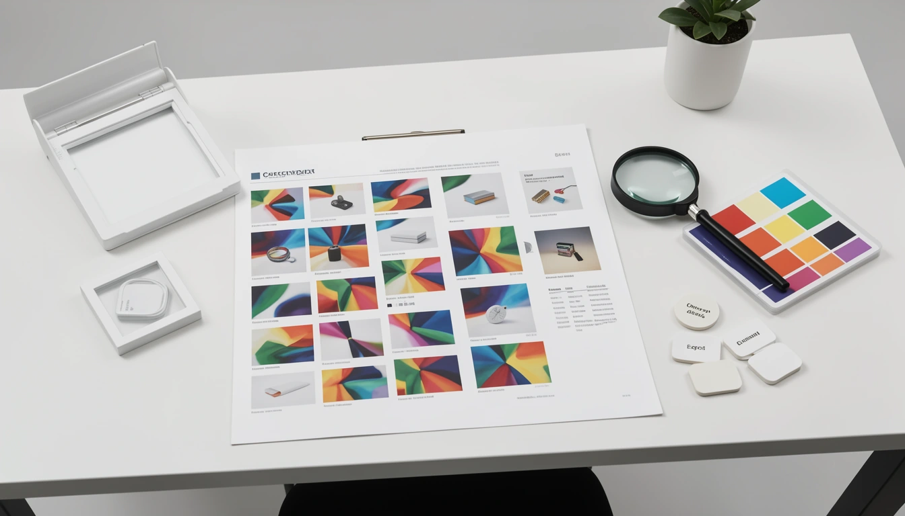
Source stack
QA
Geometry
Identity
Use surface
Approved surface
Cropped service samples can show taste without giving away full product art.
Small-object geometry, fake text, and malformed props are screened before delivery.
The client sees a focused direction before the full package is produced.
Source
Weak input
QA Gate
Approved
Usable asset
Beta pricing frame
Simple offers that are easy to say yes to.
Numbers are local draft ranges. Final pricing can change after live demand tests.
Watermarked Preview
$49 - $129
One weak image or page, one proof direction, one short diagnosis.
- 1 buyer surface
- 1 visual direction
- Creditable toward sprint
Refresh Sprint
$199 - $349
Three to eight visual directions for one storefront, listing set, menu, or profile.
- 3-8 images or crops
- One merchant lane
- Fastest paid starter
Launch Kit
$399 - $699
Hero, social crops, banner direction, listing cover, and gallery structure.
- Campaign surface set
- Gallery logic included
- Best for launches
Visual Maintenance
$199 - $399/mo
Small monthly refresh batches for shops that need steady visual upgrades.
- Monthly small batch
- New product or profile updates
- Cancel between cycles
Low-friction path
Start small, prove taste, then scale the surface set.
Fast start path
A weak image, a target surface, then a watermarked proof.
The first step should stay light. A shop owner does not need to brief an agency; they only need to show what currently looks weak and where the upgraded image must work.
IN
01 / source
Send the current weak point
One product photo, website section, Google/Yelp image, Etsy listing, or social post is enough to start.
SF
02 / surface
Choose where buyers will see it
Website hero, product gallery, local profile, menu post, launch image, profile banner, or offer page.
PF
03 / proof
Get a preview direction
The first reply can be a watermarked proof, a diagnosis, and the fixed package that fits the job.
Each sprint has a narrow deliverable set and a clear usage surface.
Customer-specific previews and full-resolution files stay private.
The work starts with direction and proof before spending effort on final polish.
Expansion slots
Built as one page now, ready to connect more projects later.
Marketplace Lab
Etsy, eBay, and POD products stay separate from this site until a public-safe storefront layer is chosen.
Creator Visuals
Shorts, story frames, and creator branding can become a separate public offer when stable.
Private Traffic Kits
Chinese-first small-business packages can live behind a bilingual version when ready.
Core
B2B Visual Strike
Preview request desk
Send one weak image. Get a sharper commercial direction.
Best first request: one weak visual, one intended buyer surface, and the outcome you want. Aster Forge responds with a focused diagnosis or watermarked direction before a full package is approved.
Product photo rescue
Local profile refresh
Launch visual kit
Hospitality mood upgrade
Premium culture anchor
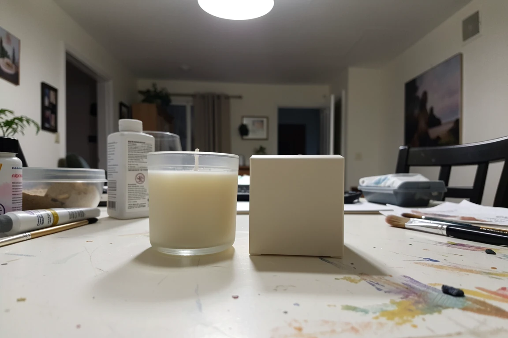
A real-looking image with useful product facts, but not enough buyer trust for a hero or listing cover.
Turn the same offer into buyer-facing surfaces.
- Website hero direction
- Gift-context gallery crop
- Clean ecommerce trust signal
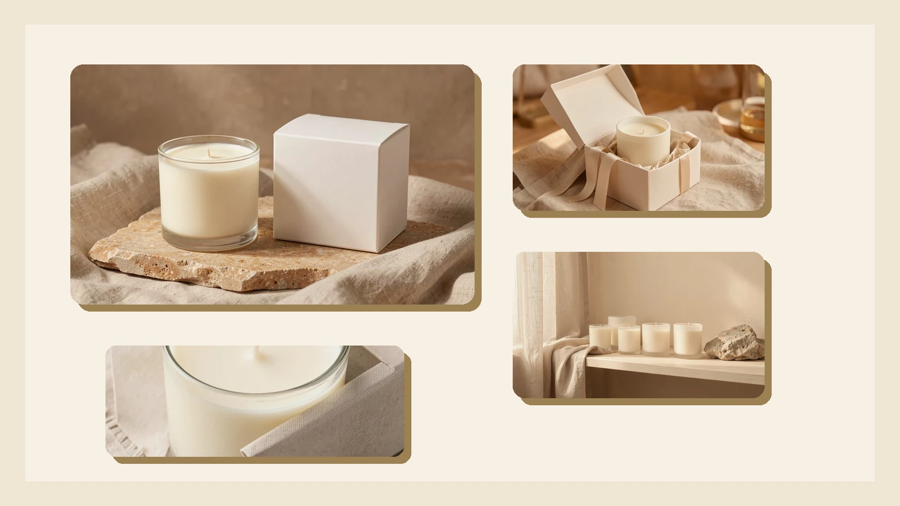
The output is scoped as practical surfaces, not open-ended design labor.
Website hero, listing cover, profile banner, menu post, or launch image.
The first visual can prove direction without handing over full-resolution files.
Preview Strike, Refresh Sprint, Launch Kit, or monthly maintenance.
Aster Forge